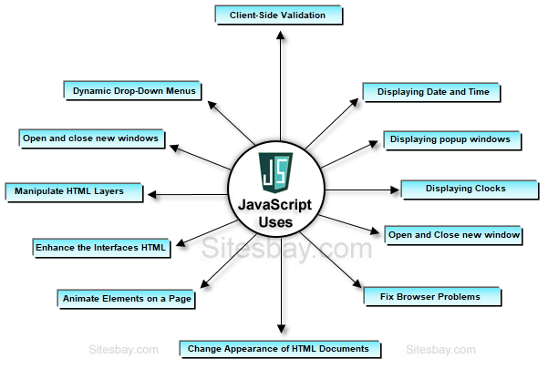

Introduction Of JavaScript
1:JavaScript is a programming language.For a lot of people, the term computer programming
conjures up visions of super-intelligent nerds hunched over keyboards, typing nearly
unintelligible gibberish for hours on end. And, honestly, some programming is like that.
Programming can seem like complex magic thats well beyond the average mortal. But many
programming concepts arent difficult to grasp, and as programming languages go, JavaScript is a
good first language for someone new to programming...
2:Still, JavaScript is more complex than either HTML or CSS, and programming often is a foreign
world to web designers; so one goal of this book is to help you think more like a programmer.
Throughout this book, youll learn fundamental programming concepts that apply whether you are
writing JavaScript, ActionScript, or even writing a desktop program using C++. More importantly,
youll learn how to approach a programming task so youll know exactly what you want to do
before you start adding JavaScript to a web page...
3:You can learn each of this topics one by one. To master the Javascript you must also know how
to write in HTML.Every programming language has its own set of keywords and characters, and its
own set of rules for putting those words and characters togetherthe languages syntax. Youll
need to memorize the words and rules of the JavaScript language (or at least keep this book
handy as a reference). When learning to speak a new language, you quickly realize that placing
an accent on the wrong syllable can make a word unintelligible. Likewise, a simple typo or even
a missing punctuation mark can prevent a JavaScript program from working, or trigger an error in
a web browser. You will make plenty of mistakes as you start to learn to program thats just the
nature of programming...
4:At first, you will probably find JavaScript programming frustrating you will spend a lot of your
time tracking down errors you made when typing the script. Also, you might find some of the
concepts related to programming a bit hard to follow at first. But don't worry: If you have tried
to learn JavaScript in the past and gave up because you thought it was too hard, this book will
help you get past the hurdles that often trip up folks new to programming. (And if you do have
programming experience, this book will teach you JavaScript's idiosyncrasies and the unique
concepts involved in programming for web browsers.)....

1.The first web browser with a graphical user interface, Mosaic, was released in 1993.
Accessible to non-technical people, it played a prominent role in the rapid growth of the
nascent World Wide Web.[15] The lead developers of Mosaic then founded the Netscape corporation,
which released a more polished browser, Netscape Navigator, in 1994. This quickly became the
most-used...
2.During these formative years of the Web, web pages could only be static, lacking the
capability for dynamic behavior after the page was loaded in the browser. There was a desire in
the burgeoning web development scene to remove this limitation, so in 1995, Netscape decided to
add a scripting language to Navigator. They pursued two routes to achieve this: collaborating
with Sun Microsystems to embed the Java programming language, while also hiring Brendan Eich to
embed the Scheme language...
3.Netscape management soon decided that the best option was for Eich to devise a new language,
with syntax similar to Java and less like Scheme or other extant scripting languages.[5][6]
Although the new language and its interpreter implementation were called LiveScript when first
shipped as part of a Navigator beta in September 1995, the name was changed to JavaScript for
the official release in December.....

1:The use of JavaScript has expanded beyond its web browser roots. JavaScript engines are now
embedded in a variety of other software systems, both for server-side website deployments and
non-browser applications..
2:Initial attempts at promoting server-side JavaScript usage were Netscape Enterprise Server and
Microsoft's Internet Information Services,but they were small niches. Server-side usage
eventually started to grow in the late 2000s, with the creation of Node.js and other
approaches...
3:Electron, Cordova, React Native, and other application frameworks have been used to create
many applications with behavior implemented in JavaScript. Other non-browser applications
include Adobe Acrobat support for scripting PDF documents and GNOME Shell extensions written in
JavaScript...
4:JavaScript has recently begun to appear in some embedded systems, usually by leveraging
Node.....

Imperative and structured :
JavaScript supports much of the structured programming syntax from C (e.g., if statements, while
loops, switch statements, do while loops, etc.). One partial exception is scoping: originally
JavaScript only had function scoping with var; then block scoping was added in ECMAScript 2015
with the keywords let and const. Like C, JavaScript makes a distinction between expressions and
statements. One syntactic difference from C is automatic semicolon insertion, which allow
semicolons (which terminate statements) to be omitted.....
When you click on the navigation it will take to same page but different location, or different
external website.

Conditional(Ternary)Operator Of JavaScript
The conditional (ternary) operator is the only JavaScript operator that takes three operands: a
condition followed by a question mark (?), then an expression to execute if the condition is
truthy followed by a colon (:), and finally the expression to execute if the condition is falsy.
This operator is frequently used as an alternative to an if...else statement.....
1.Parameters:
An expression whose value is used as a condition...
2.Exprif False:
An expression which is executed if the condition is falsy. (that is,has a value which can be
converted to false)...
3.Exprif True:
An expression which is executed if the condition evaluates to a truthy. value (one which equals
or can be converted to true).